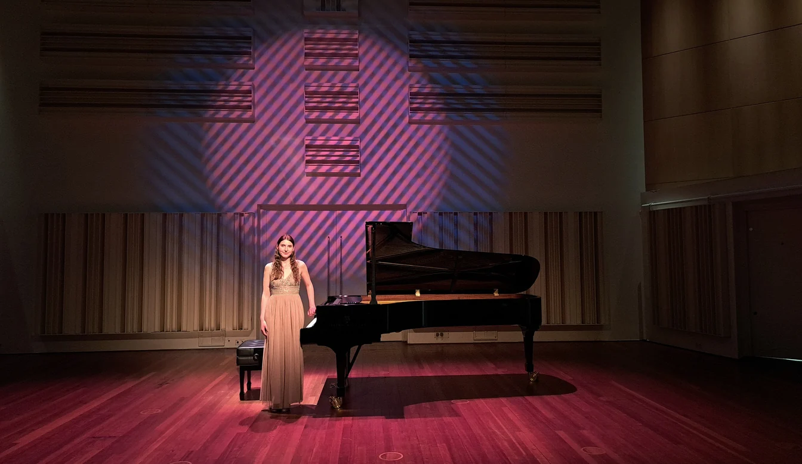

Where I Stand
as a Pianist

Biography
Rozálie Stoklasová is a Czech pianist, teacher, and adviser, currently based in the Netherlands. As her main passion is teaching, she focuses on working with international students through private lessons, and in 2025, she began teaching at the Junior Department of the Conservatorium Maastricht. Thanks to her certified training, her lessons emphasize creativity, empathy, and individual guidance that encourages pupils' imaginations. As a pianist, she has gained a wide range of professional experience that enriches her teaching.
Rozálie has always been interested in teaching, admiring the art of delivering a well-structured, inspiring piano lesson. During her studies, she completed specialized training in “Advanced Teaching Skills,” obtaining a Teaching Certificate and gaining knowledge of psychology, didactics, and piano pedagogy. She works with private students of all levels and ages, from children to adults and beginners to advanced players. Outside her private teaching, she guides a class of young, classically trained musicians at the Junior Department of the Conservatorium Maastricht. By adapting lessons to the individual needs of each student, she creates a safe space where music comes alive. The core value of her teaching is not only to develop technique but also to build a unique connection between music and fantasy.
As an actively performing pianist, Rozálie has gained extensive experience in the music industry, demonstrating a distinctive touch, technical skills, and colorful expressivity. She participated in the Samson François International Piano Competition in 2024. That same year, she won the IAFM Köln Award at the IAFM Cologne International Piano Competition, where the jury praised her precise differentiation of musical styles. Between 2018 and 2022, she won first prizes at the Art-Duo Music Festival in cities including Copenhagen, Berlin, Madrid, and Vienna. As a young talent, she won second prize at the international Amadeus competition and first prize at the Virtuosi per Musica di Pianoforte International Competition. She is also a two-time first-prize winner at the Prague Junior Note Piano Competition and was an overall prize winner at the Pro Bohemia Piano Competition.
In April 2026, Rozálie made her solo debut at Muziekgebouw Eindhoven. In the same year, she collaborated with Greek pianist Vasileios Gavvaris on a joint concert at Theater aan het Vrijthof in Maastricht. While studying in the Netherlands, she has participated in events including Moving Music Festival, Night and Day of Classical Music, Opus 16 Concerts, and Chamber Music Festival. She has also performed at venues such as De Bombardon in Heythuysen, Leopoldskerkje in Meerssen, Limburgzaal in Heerlen, Pentagoon Academy in Tongeren, Belgium, and Koepelkerkapel in Maastricht.
Her additional activities include work with chamber music ensembles, including piano trios and the unusual combination of piano and two classical saxophones. Rozálie is a member of Trio Dell'Arte, performing with oboe and English horn, with a repertoire focused mainly on Baroque works and compositions by Max Bruch. She also performs with Trio Amabile, an ensemble of oboe, viola, and piano. She has experience in four-hand piano repertoire and accompaniment, and she currently accompanies Donna Voce, a female vocal ensemble based in Wahlwiller. Beyond music, she has worked for several years in the service department of the National Theatre in Prague.
Rozálie is pursuing a master's degree in classical piano at the Conservatorium Maastricht under the guidance of Dr. Katia Veekmans. She completed her bachelor's degree in 2026 with a specialization in piano pedagogy and obtained a Teaching Certificate. Previously, in 2022, she completed an eight-year program at the Prague Secondary School of Music (“Gymnázium a Hudební škola hl. m. Prahy”) in a special music class led by Prof. Irina Parker. She earned her secondary education diploma and graduated with a final solo recital.
To develop her musical skills, Rozálie has attended masterclasses with distinguished pianists and teachers. In 2024, she was selected as a piano-class representative for a masterclass with Mikhail Voskresensky. The following year, she attended D'Accord Academy in Germany, where she studied with Czech pianist Bohumír Stehlík. In 2022, she participated in the International Forum for Flute and Piano in Luxembourg, working with American pianist Prof. Daniel Blumenthal. Earlier, she attended masterclasses with Czech pianist Martin Kasík.
Spending her childhood in Rožnov pod Radhoštěm and her teenage years in Prague shaped Rozálie's personality. The cultural diversity she experienced in the Czech Republic inspired her to pursue musical education in the Netherlands. Guidance from professional teachers led her to discover a passion for teaching. She hopes to teach intensively after completing her studies, offer lessons and masterclasses, and make classical music accessible to a wider audience. Her vision is to encourage students' imaginations and help them appreciate the connection between music and fantasy.
By sharing her knowledge as a teacher, she hopes to raise independent, open musicians who create music that is truly meaningful.